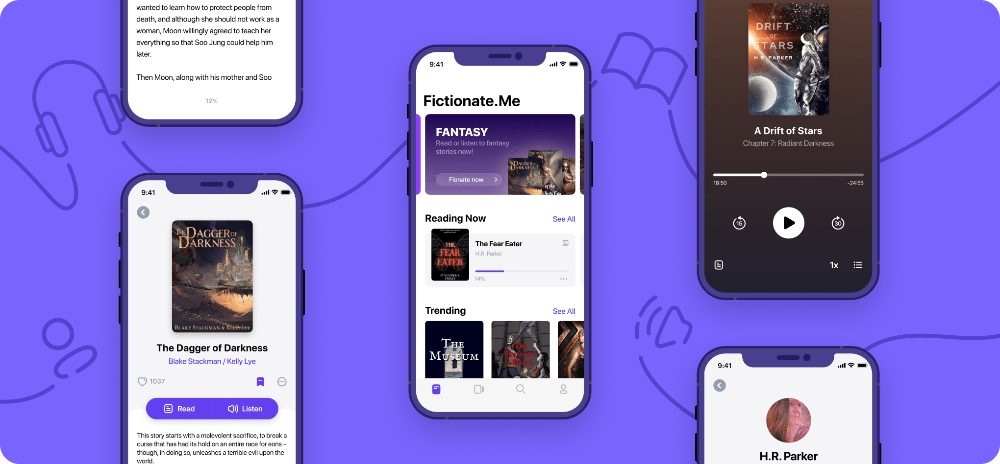

WLLBE (Design System)
01. Overview
Worldline, a global e-payment leader specializing in Merchant Services, Terminals, Fintech, and Mobility & e-Transactional Solutions. When I joined the company, I served as the core UI/UX product designer in a 30-member team to develop an in-house UI/UX design system (WLLBE) for upcoming financial banking projects. The company lacked a systematic approach, with designers and developers initiating projects from scratch, resulting in inconsistent designs and extended project timelines. The goal was to introduce a design system to streamline the process and enhance overall project efficiency.
Role
UI/UX Product Design, Design System Management and DocumentationTimeline
April 2022 — Nov 2022Tools


02. Main Challenges
The primary challenge was the absence of a design system, leading to repetitive efforts and divergent design outcomes across projects. This inconsistency not only affected the visual cohesion but also extended project timelines due to redundant work. Recognizing this challenge was crucial in framing the necessity for a design system.
Inconsistency
Developers encounter difficulties in managing and updating projects with diverse design approaches, resulting in inefficiencies and extended development cycles.Recreation
Designers and developers had to recreate components from scratch for each project, leading to redundancy.Timelines
The lack of a standardized approach significantly prolonged project timelines due to repetitive work and divergent design choices.03. Goals
The main objectives were to establish a cohesive design language, foster collaboration with development teams, and reduce project timelines. The design system aimed to provide a standardized set of guidelines and components, ensuring a consistent user experience across various banking projects.
Accessibility & Inclusivity
Designing for the needs of people with permanent, temporary, situational, and acknowledging diversity and difference:- Be consistent
- Give control
- Easy to access
- Save timeline
Dev-friendly
Designing with developers' needs in mind:- Scale for responsiveness
- Choose easy-to-code over fancy-look
- Be consistent
- Save timeline
04. Problem
Upon reviewing past projects through a comprehensive site audit, I discovered that the lack of a UI/UX design system led to significant divergence in assets, such as numerous variants of buttons, badges, and other components. This inconsistency caused bottlenecks, highlighting the urgent necessity for a unified design approach. Insights gained from this review were crucial in identifying the key requirements for developing a cohesive design system.
Without Design System
Every element is coded manually. Developers and designers recreate the same buttons, implement the same colors and design similar views/ pages from scratch every time.With Design System
Every element, whether it's a button, color or font, is pulled directly from the library. Developers simply recall existing assets.05. Process
Research
Beginning the journey of creating a design system, I initially lacked extensive
experience in this area. To gather insights, I studied prominent design systems like
Material Design, IBM Design Language, Bootstrap, and Ant Design. While informative,
these systems were vast, serving more as inspiration than practical guidance.
In overcoming this challenge, I discovered the power of Atomic Design
principles.
This
structured approach helped me organize design elements into reusable components,
providing a solid framework for my own system. This research phase not only deepened
my
understanding of design system fundamentals but also equipped me with practical
frameworks for implementation, setting a strong foundation for the project ahead.